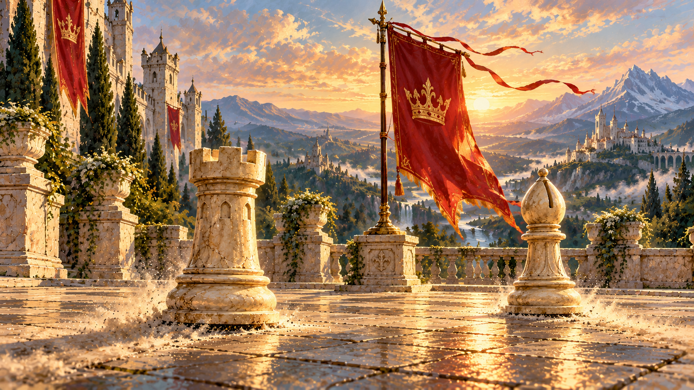
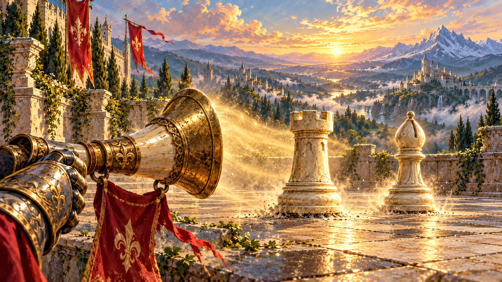
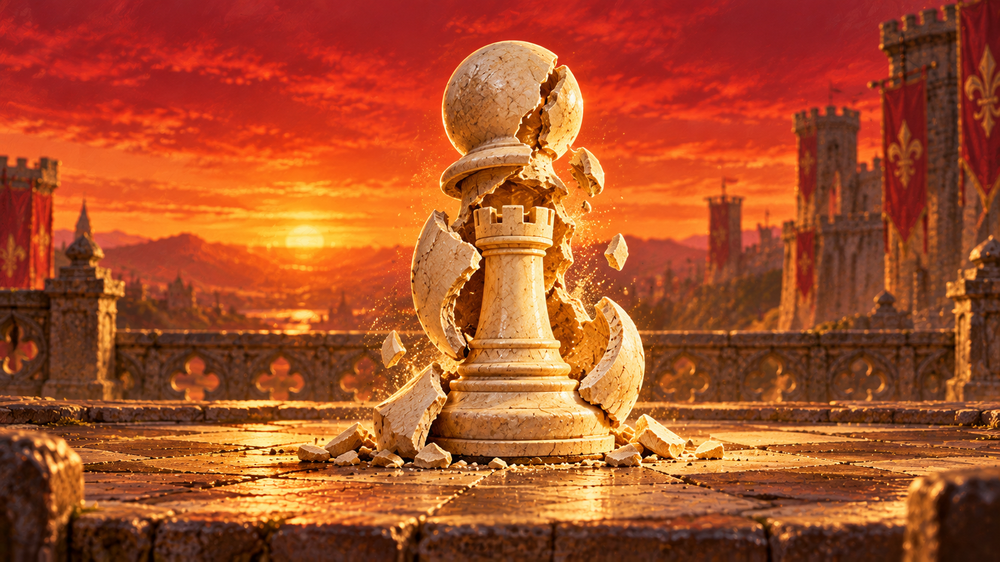
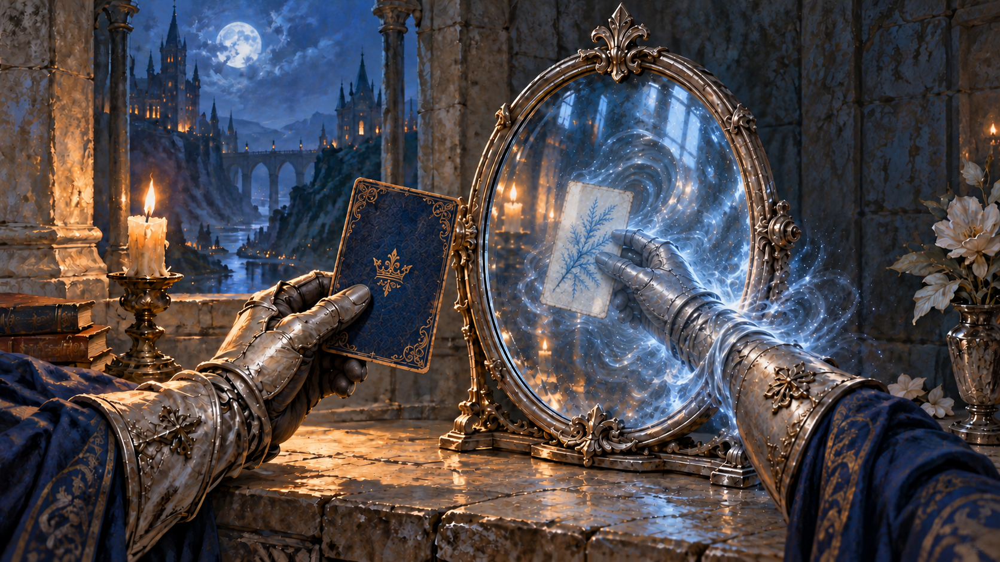
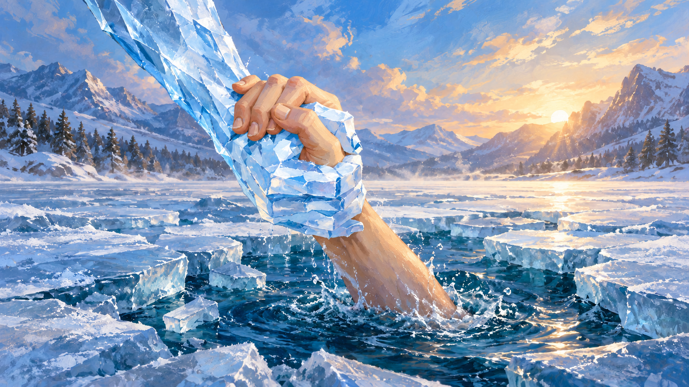

Rally · A — Answer the banner · selected
Two allies respond to a raised crimson standard.

Rally A, Answer the banner, is selected. Mirror uses the approved option2 with the card behind the glass. All paintings below reflect the latest revisions.
Two allies respond to a raised crimson standard.

A horn call stirs two allies into action.

An ivory pawn breaks down to reveal an ivory rook.

The real card faces the mirror; the other hand grasps its reflection behind the glass.

The same rescue, with a more stylized painted human hand.
